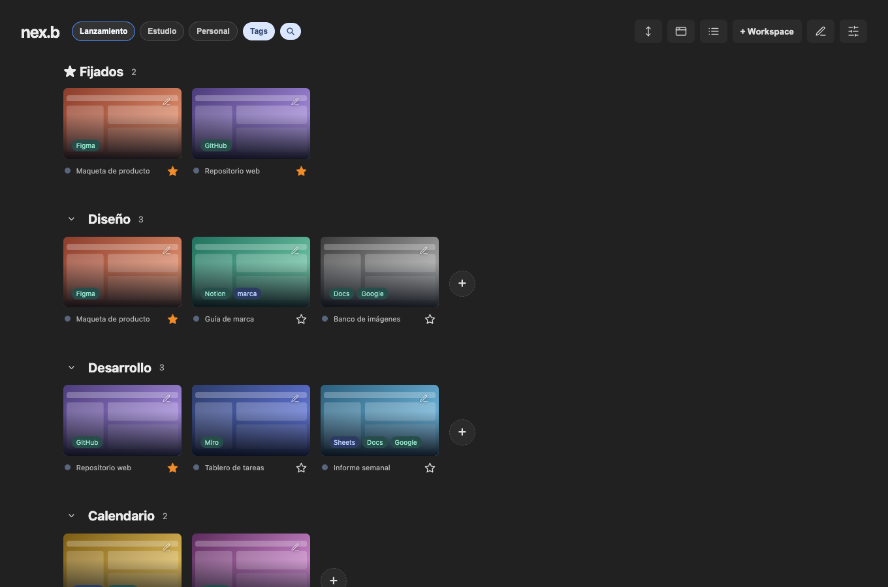
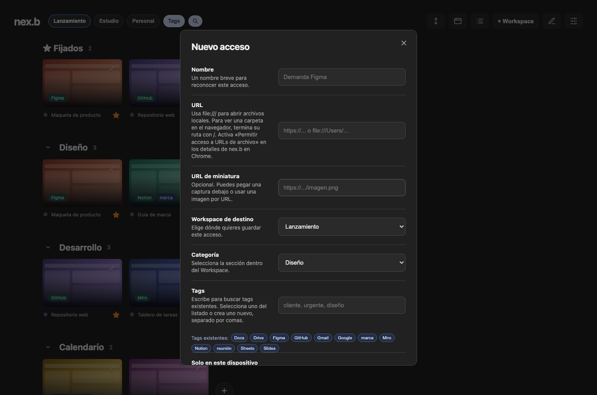
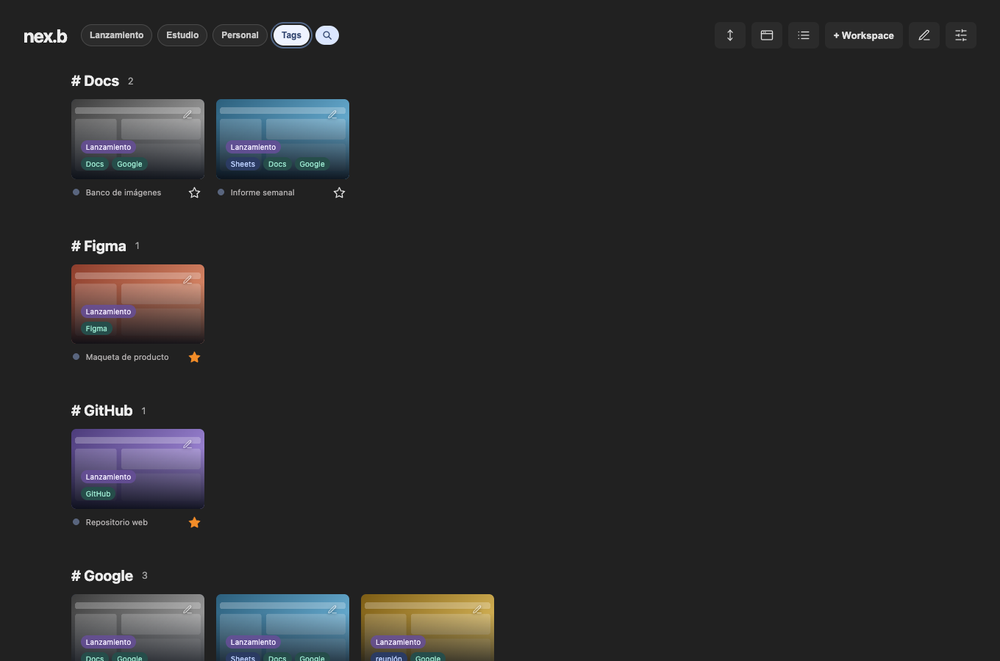
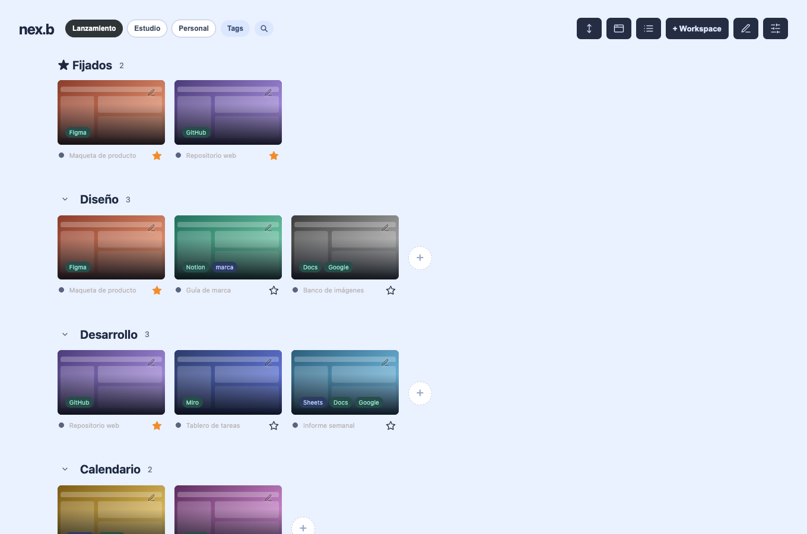
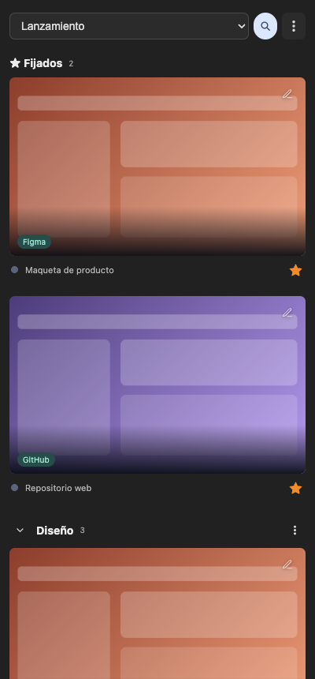
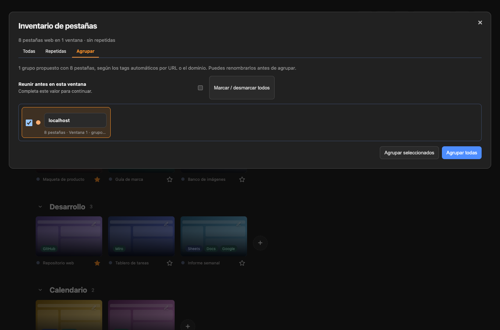
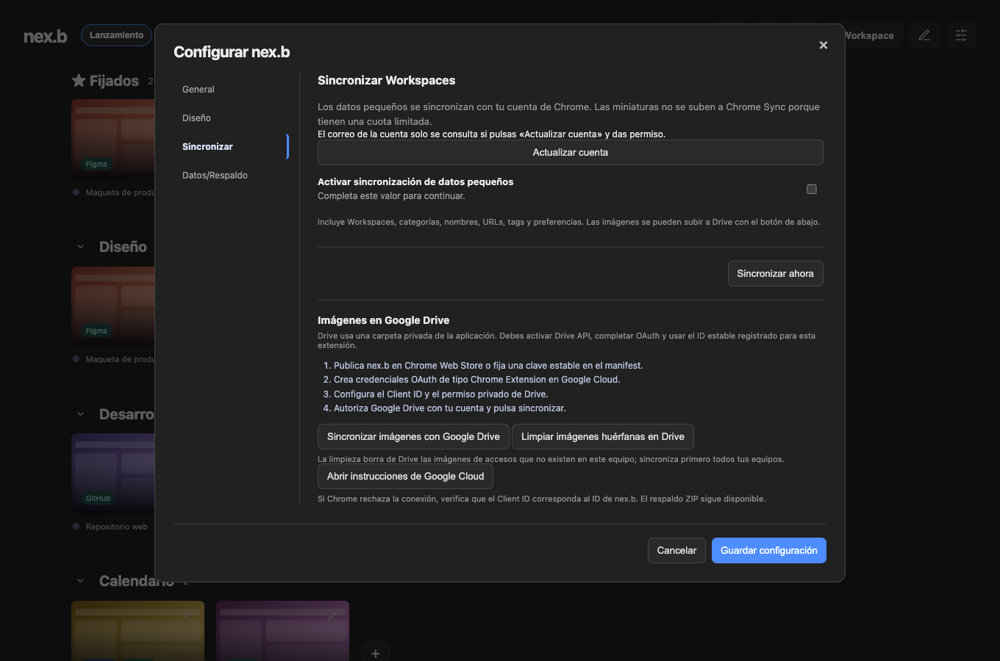
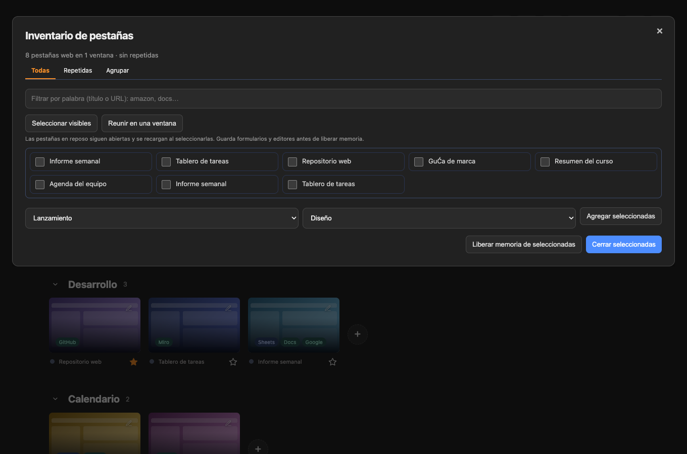
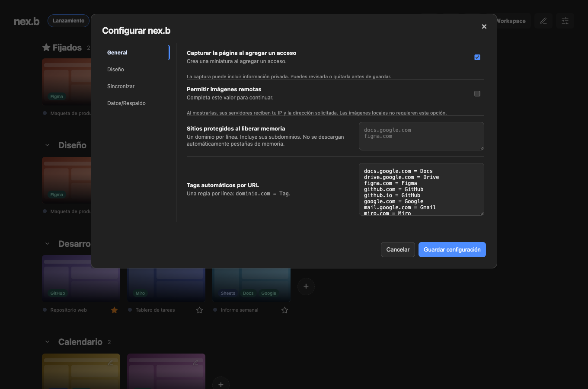
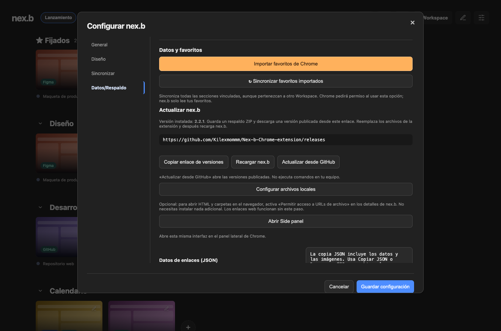

Tu nueva pestaña, organizada por proyectos.
Un panel visual para encontrar tus recursos de trabajo, agruparlos por Workspace y volver a las pestañas que ya tienes abiertas, en lugar de abrir otra.
Requiere Chrome 123 o posterior. Sin cuenta de nex.b.

Capturas reales de la extensión con un Workspace de demostración.
Mira el recorrido
42 segundos por los Workspaces, tags, reutilización de pestañas, agrupar y respaldos.
Menos caos, más foco
Todo lo que haces a diario en el navegador, ordenado por proyecto y a un clic.
Organización por proyecto
Workspaces, secciones y subcategorías para separar trabajo, estudio y proyectos personales.
Menos pestañas duplicadas
Antes de abrir un acceso, nex.b busca una pestaña coincidente y enfoca su ventana.
Accesos reconocibles
Cada acceso tiene su miniatura; el nombre y el estado quedan debajo, sin tapar la imagen.
Tags que conectan todo
Etiquetas propias, sugerencias al escribir y reglas automáticas por dominio.
Tu espacio, a tu gusto
Diez estilos, fondos, colores y tamaños de miniatura.
Datos bajo tu control
Guardado local, respaldo ZIP y sincronización opcional.
Funciones pensadas para el día a día
Esto es lo que hace nex.b hoy.
Workspaces visuales y accesos con miniatura
Crea un Workspace por proyecto y dentro, secciones con tus accesos. Cada acceso muestra una captura como miniatura; si lo prefieres, la extensión puede capturar la página al añadirlo, y tú decides si la conservas.
- Pega una captura desde el portapapeles o usa una imagen por URL.
- «Capturar imágenes faltantes» completa las miniaturas que no tengas.
- Diez estilos, fondos, colores, fuente y tamaño de miniatura ajustables en Configuración → Diseño.

Tags y reglas automáticas por dominio
Añade tags propios con sugerencias mientras escribes. Además, las reglas «dominio = Tag» etiquetan solas: por ejemplo, figma.com = Figma. La vista Tags reúne los accesos de todos tus Workspaces por etiqueta.

Reutiliza y enfoca pestañas
Al pulsar un acceso, nex.b busca primero una pestaña que coincida y enfoca su ventana antes de abrir otra. Tú eliges cómo reconocerla: el mismo documento, la URL exacta o cualquier página del sitio.

Side Panel y fijados
Usa nex.b también en el Side Panel de Chrome, con selector de Workspace, búsqueda, secciones plegables y vista de solo títulos. Marca con ★ tus accesos clave: aparecen en una sección Fijados al principio del Workspace sin duplicarse.

Agrupa todas tus pestañas por categoría, en Chrome
Con un clic, una barra de pestañas desordenada se convierte en grupos nativos de Chrome. nex.b propone los grupos con la misma lógica que tus tags automáticos: 4 pestañas de Gmail pasan a ser un grupo «Gmail» y, si no hay regla, agrupa por dominio.
- Agrupa todas las pestañas o solo las que elijas; los nombres son editables.
- Reutiliza grupos que ya tienen el mismo nombre y no toca las pestañas fijadas.
- Opcionalmente reúne todo antes en la ventana actual.

Abre una sección completa en su propia ventana para enfocarte en un tema
Cada sección es un contexto. Abre todos sus accesos en una ventana nueva, reunidos en un grupo nativo «Workspace · sección», y trabaja en ese único tema sin que se mezcle con el resto de tus pestañas. Los accesos que ya estaban abiertos se enfocan en lugar de duplicarse.
- Un botón en cada sección abre sus accesos en una ventana nueva con grupo.
- Otro botón abre los accesos de la sección en esta ventana y enfoca los que ya están abiertos.
- También disponible desde el menú del Side Panel.
Inventario de pestañas y liberar memoria
El Inventario lista tus pestañas web abiertas, con filtro, pestaña de repetidas y selección múltiple: añádelas a un Workspace, ciérralas o libera memoria de las seleccionadas.
Liberar memoria descarga pestañas que siguen en la barra y se recargan al volver; no promete consumo cero.
Sincroniza y respalda
Los datos pequeños (Workspaces, categorías, nombres, URLs, tags y preferencias) pueden sincronizarse con Chrome Sync. Las imágenes pueden subirse a una carpeta privada de Google Drive con un botón. Y siempre tienes el respaldo en ZIP, con importación de configuración e imágenes.
Los accesos marcados «Solo en este dispositivo» no se envían a Chrome Sync ni a Drive. La sincronización con Drive requiere configurar OAuth; consulta el README del proyecto.

Cómo funciona
Tres pasos y ya tienes tu panel.
Instala nex.b
Añádela a Chrome 123 o posterior. Al abrir una pestaña nueva, entras a tu panel.
Crea Workspaces y accesos
Un Workspace por proyecto, secciones dentro y accesos con miniatura y tags.
Vuelve a lo que ya tienes abierto
Pulsa un acceso: nex.b enfoca la pestaña existente o abre una nueva. Usa el Inventario para ordenar el resto.



Tus datos, en tu equipo
nex.b guarda tu biblioteca localmente y te deja decidir qué se comparte.
- Guardado local por defecto. La sincronización con Chrome Sync y Google Drive es opcional.
- Permisos opcionales cuando hacen falta. Favoritos, portapapeles, correo de la cuenta y captura masiva se solicitan al usar esas funciones.
- Imágenes remotas desactivadas por defecto. Las locales no requieren esa opción.
- Accesos «Solo en este dispositivo». No se envían a Chrome Sync ni a Drive.
- Sin cuenta de nex.b. Tu respaldo ZIP es tuyo, para exportar e importar.
Preguntas frecuentes
¿Necesito una cuenta?
No. nex.b funciona sin cuenta de NEX.B. La sincronización es opcional y usa tu cuenta de Chrome.
¿Qué versión de Chrome necesito?
Chrome 123 o posterior (Manifest V3).
¿Puedo abrir archivos o carpetas de mi equipo?
Sí, con direcciones file:///. Hay que activar manualmente «Permitir acceso a URLs de archivo» en los detalles de nex.b en Chrome. Los respaldos guardan las rutas, no copian los archivos.
¿«Liberar memoria» cierra mis pestañas?
No: las descarga. Siguen en la barra y se recargan al volver. Guarda formularios y editores antes de usarlo. No se promete consumo cero.
¿Se sincroniza todo entre equipos?
Chrome Sync lleva los datos pequeños (sin miniaturas). Las imágenes pueden subirse a Google Drive, que requiere configurar OAuth. El respaldo ZIP siempre está disponible.
¿Cómo la instalo?
El botón «Añadir a Chrome» de esta página es un marcador de posición. Mientras tanto, el README del proyecto explica cómo cargarla descomprimida desde GitHub.
Pon orden en tu nueva pestaña
Workspaces, accesos con miniatura y pestañas que no se duplican.
Añadir a Chrome